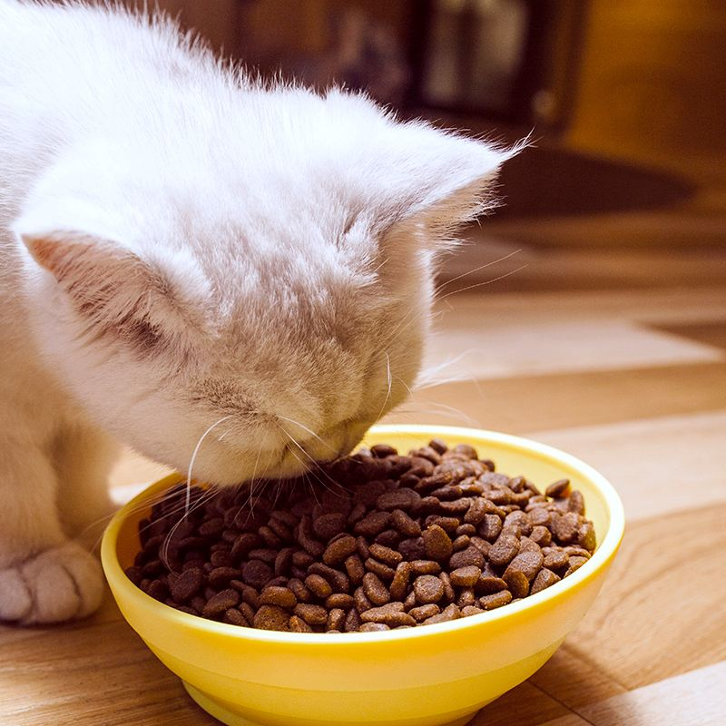
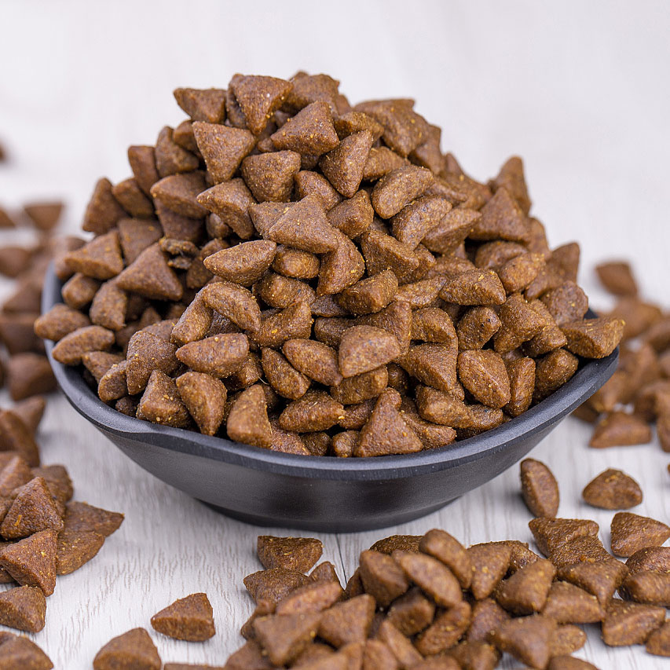

Feeding a cat can be a straightforward process. As a newbie, here are some basic tips to ensure your cat gets the proper nutrition it needs: ①Choose a high-quality cat food: Look for cat food that is specifically formulated for your cat's life stage and needs. Read the ingredients label carefully to ensure that the food contains high-quality protein sources, vitamins, and minerals. ②Determine the appropriate feeding amount: The amount of food your cat needs will depend on its age, size, and activity level. Follow the feeding guidelines on the cat food packaging, but adjust as needed based on your cat's individual needs.  ③Feed your cat on a regular schedule: Cats thrive on routine, so establish a feeding schedule and stick to it. Most cats do well with two meals a day. ④Provide fresh water: Make sure your cat has access to clean, fresh water at all times. Change the water daily and clean the bowl regularly. ⑤Avoid giving your cat human food: While it may be tempting to share your food with your cat, many human foods can be harmful to cats. Stick to feeding your cat cat-specific food. ⑥Monitor your cat's weight: Regularly monitor your cat's weight and adjust its food intake as necessary. An overweight cat can develop health problems, so it's important to keep your cat at a healthy weight.